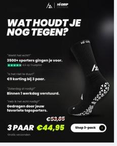
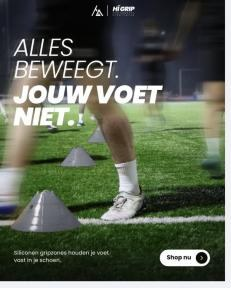
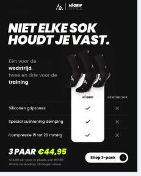
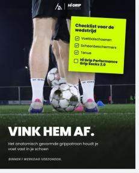
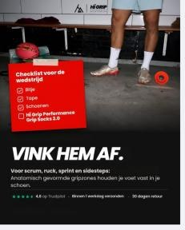
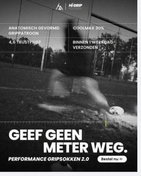
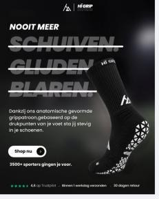
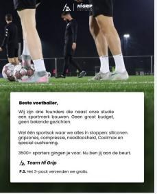
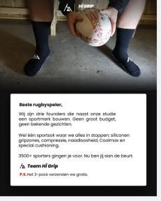

NL Rugby / Voetbal / Product
- De enige campagne met genoeg data. €14,13 per winkelwagen.
- Reels en Stories zijn per klik 30 tot 40% goedkoper dan de feed.
- De groep Product haalt de goedkoopste winkelwagens, vooral door "Wat houdt je tegen".
- Van 12 winkelwagens kwam geen enkele aankoop via een klik. De 2 aankopen die Meta meldt, kwamen via de Early Access-mail.
- Van 8 tot en met 19 november gaf de campagne niets uit. Er zijn dus maar ongeveer 4,5 echte dagen.
- 54% van het geld gaat naar mensen van 45 jaar en ouder. Kijk of dat de koper is die je wilt.

Hoogste klikratio (2,7%) en goedkoopste winkelwagens van de campagne. Sok groot, prijsanker €53,85 naar €44,95, bewijs (3500+, 4,6) en één knop. Spreekt de twijfel van iemand die al bijna koopt.

Sterke kop, en Meta duwt hier 71% van het budget heen. Maar de sok is een klein wit vlak naast een felle schoen. Je ziet geen grip en geen prijs.

Zelfde recept als de winnaar: product, vergelijking, prijsanker. Kreeg maar €2,34 en is dus nooit echt getest.

Slim: de sok is het enige vakje dat nog niet is afgevinkt. Dat open vakje trekt (Zeigarnik-effect). Kreeg geen budget.

Goede klikratio voor een koude doelgroep. Het rode kaartje valt op, maar bedekt het beeld.

Klikt goed, maar de sok is in de wazige zwart-witfoto niet als sok te herkennen. Zelfde valkuil als "More Grip".

Veel tekst en de doorgestreepte woorden zijn op een telefoon lastig te lezen. Het probleem is wel herkenbaar.

Een brief vraagt om lezen, maar in de feed scrolt iemand in een halve seconde. Het verhaal is sterk, alleen niet op deze plek.

Laagste klikratio van de campagne. Zelfde reden als de voetbalversie.